조경기사 (2019-04-27 기출문제)
1과목: 조경사
1. 다음 중 중세 수도원의 회랑식 중정(Cloister Garden)에 대한 설명으로 옳지 않은 것은?(오류 신고가 접수된 문제입니다. 반드시 정답과 해설을 확인하시기 바랍니다.)
- 4부분으로 구획되어진 중정이 있다.
- 분수는 중정의 중앙에 설치되어 있다.
- 페리스틸리움(peristylium)의 구조와 동일하게 흉벽을 두지 않았다.
- 수도원 내의 다른 건물들에 의하여 둘러싸여 있는 공간을 의미한다.
(정답률: 76%)

2. 고려시대부터 많이 사용된 정원 용어인 화오(花摀)에 대한 설명과 거리가 먼 것은?
- 오늘날 화단과 같은 역할을 한 정원 수식공간이다.
- 지형의 변화를 얻기 위해 인공의 구릉지릉 만들었다.
- 화초류나 화목류를 많이 군식 하였다.
- 사용된 재료에 따라 매오(梅摀), 도오(挑摀), 죽오(竹摀)등으로 불렸다.
(정답률: 76%)
3. 조선시대 조경 관련 고문헌의 저자와 저술서가 일치하는 것은?
- 강희안 - 택리지
- 홍만선 - 유원총보
- 신경준 - 순원화훼잡설
- 이수광 - 임원경제지
(정답률: 53%)
4. 일본 용안사 석정과 관련이 없는 것은?
- 암석
- 장방형
- 추상적 고산수
- 침전조
(정답률: 68%)
5. 중국 진시왕 31년에 새로이 왕국을 축조하고, 구 안에 큰 연못을 조성한 후 그 속에 봉래산을 만들었다는 연못의 명칭은?
- 곤명호(昆明浩)
- 태액지(太液池)
- 난지(蘭池)
- 서호(西浩)
(정답률: 58%)
6. 명나라 때 별서정원의 성격으로 꾸며진 소주 지방의 명원은?
- 기창원
- 이화원
- 졸정원
- 작원
(정답률: 72%)
7. 스페인의 알함브라 궁전의 4개 중정 가운데 이슬람 양식은 부분적으로 보이면서도 기독교적인 색채가 강하게 가미되어 있는 중정은?
- 알베르카 중정(Patio de la Alberca), 사자의 중정(Patio de los Leons)
- 사자의 중정(Patio de los Leons), 다라하 중정(Patio de Leons)
- 린다라야 중정(Lindaraja), 창격자 중정(Patio de Reja)
- 창격자 중정(Patio de Reja), 알베르카 증정(Patio de la Alberca)
(정답률: 49%)
8. 중국 유원(留園)의 설명 중 맞는 것은?
- 소주의 정원 중 가장 소박한 정원이다.
- 처음 조성은 청대 밀기 관료의 정원으로서였다.
- “홍루몽”의 대관원 경치를 묘사하였다.
- 변화있는 공간 처리와 유기적 건축배치의 수법을 갖는다.
(정답률: 66%)
9. 정원에 많은 관심을 가졌던 백거이(白居易)와 관련 없는 것은?
- 유명한 장한가(長恨歌)를 지었다.
- 진나라 사람으로 유명한 시인이다.
- 관사(官舍)에 화원을 만들고 동파종화(洞坡種化)라는 시를 지었다.
- 공무를 마치고 낙향할 때 천축석(天竺石)과 학(鶴)을 가지고 갔다.
(정답률: 64%)
10. 창덕궁 후원 조경의 특징은 17개소에 정자를 건립함으로써 공간을 특화하였다. 이 공간 가운데 연못의 이름과 정자(亭子)의 연결이 바르지 않은 것은?
- 존덕지-존덕정
- 반도지-취한정
- 몽답지-몽답정
- 빙옥지-청심정
(정답률: 53%)
11. 정원에 처음으로 도입된 것들과 밀접한 관계가 있는 조경가들의 연결이 잘못된 것은?
- 물 화단(parterres d' eau):르 노트르(Andre Le Notre)
- 수정궁(crystal palace):팩스턴(Samuel Paxton)
- 큐 가든의 중국식 탑:챔버(Sir William Chambrrs)
- 하-하(Ha-ha):랩턴(Humphry Repton)
(정답률: 64%)
12. 사찰에서 구도자가 제석천왕이 다스리는 도리천에 올라 마지막으로 해탈을 추구하는 것을 상징하는 최종적인 문의 이름은?
- 일주문
- 사천왕문
- 금강문
- 불이문
(정답률: 65%)
13. 담양 소쇄원에 관한 설명 중 옳지 않은 것은?
- 소쇄원 48영시에는 목본 16종, 초본 5종의 식물이 나타난다.
- 광풍, 제월의 당호는 이덕유의 평천장고사에서 인용한 것이다.
- 조담에서 떨어지는 물은 홈통을 통해 방지로 유입된다.
- 매대라고 불리는 화계는 자연석을 2단으로 쌓아 만든 구조물이다.
(정답률: 52%)
14. 일본의 전통정원 오행석조방식에서 주석(主石)이 되는 바위의 명칭은?
- 기각석
- 심체석
- 영상석
- 체동석
(정답률: 46%)
15. 이집트 피라미트에 대한 설명 중 가장 거리가 먼 것은?
- 분묘건축의 일종으로서 마스터바(Mastaba)도 여기에 포함된다.
- 선(善)의 혼(Ka)을 통해 태양신(Ra)에게 접근하려는 탑이다.
- 인간이 세운 가장 거대한 상징으로 볼 수 있다.
- 신전은 강의 서쪽에 배치하고, 분묘는 강의 동쪽에 배치하였다.
(정답률: 76%)
16. 1893년 시카고에서 열린 세계 콜롬비아 박람회가 여러 방면에 미친 영향이라 볼 수 없는 것은?
- 도시미화운동이 활발해졌다.
- 로마에 아메리칸 아카데미를 설립하였다.
- 박람회장 내 건축은 유럽고전주의 답습으로부터 완전히 탈피하였다.
- 조경계획의 수립 시 타 분야와의 공동 작업이 활발해졌다.
(정답률: 63%)
17. 다음 중 프랑스의 영향을 받은 영국 내 조경작품이 아닌 것은?
- 멜버른 홀(Melbourne Hall)
- 브라함 파크(Bramham Paek)
- 햄프턴 코트(Hamptom Court)
- 버컨헤드 공원(Birkenhead Park)
(정답률: 67%)
18. 다음 중 회교식 정원양식으로 보기 어려운 것은?
- 이탈리아-사라센
- 페르시아-사라센
- 스페인-사라센
- 인도-사라센
(정답률: 67%)
19. 조선시대에 조영된 별서정원 작정자의 연결이 틀린 것은?
- 옥호정-김조순
- 남간정사-송시열
- 소쇄원-양산보
- 명옥헌-정영방
(정답률: 46%)
20. 고려시대 궁궐 정원에 대한 내용이 처음 기록된 시기는?
- 태조 5년(942년)
- 경종 2년(977년)
- 성종 12년(994년)
- 문종 5년(1⑤2년)
(정답률: 46%)
2과목: 조경계획
21. 용적률에 대한 설명으로 알맞은 것은?
- 건축물의 일조, 채광, 통풍의 확보와 관련된 개념이다.
- 화재시 연소의 차단, 소화 작업, 피난처 역할을 확보 할 수 있게 한다.
- 식목 공간을 확보하기 위한 방법이다.
- 입체적인 건축 밀도의 개념이다.
(정답률: 70%)
22. 휴게시설 중 벤치의 배치는 소시오페탈(sociopetal) 한 형태를 취하여야 하는데, 그것은 다음 인간의 욕구 중 어디에 해당 하는가?
- 개인적인 욕구
- 사회적인 욕구
- 안정에 대한 욕구
- 장식에 대한 욕구
(정답률: 63%)
23. 주거지역 주변의 경관에 대한 시각적 선호를 예측하는 것으로서 다음 [보기]의 가설과, 계량적 예측모델의 효시라고 볼 수 있는 것은?
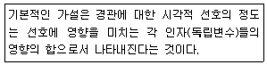
- 프라이버스 모델
- 쉐이퍼 모델
- 중정 모델
- 피터슨 모델
(정답률: 52%)
24. ｢국토기본법｣에 대한 설명이 틀린 것은?
- 국토종합계획은 10년을 단위로 수립한다.
- 국토종합계획은 5년을 단위로 전반적으로 재검토하고 실천계획을 수립한다.
- 국토계획의 유형에는 국토종합계획, 도종합계획, 시ㆍ군종합계획, 지역계획 및 부문별계획으로 구분한다.
- 중앙행정기관의 장은 지역 특성에 맞는 정비나 개발을 위하여 관계 중앙행정기관의 장과 협의하여 관계 법률에 따라 지역계획을 수립할 수 있다.
(정답률: 51%)
25. 공장조경계획의 기본원칙으로 가장 거리가 먼 것은?
- 환경개선 효과가 큰 수종을 선정한다.
- 공장의 차폐를 위한 부분적 식재에 중점을 둔다.
- 임해공장의 경우 내조성을, 공장녹화용수로는 내연성을 고려한다.
- 공장의 성격과 입지적 특성에 따라 개성적인 계획이 이루어져야 한다.
(정답률: 65%)
26. 미적 반응(aesthetic response) 과정이 올바른 것은?
- 자극→자극선택→자극탐구→반응→자극해석
- 자극→자극선택→자극탐구→자극해석→반응
- 자극→자극탐구→자극선택→반응→자극해석
- 자극→자극탐구→자극선택→자극해석→반응
(정답률: 61%)
27. 공동 주거 공간 계획 시 주거의 쾌적성 및 안전성 확보 노력과 관련이 가장 먼 것은?
- 인동 간격의 유지
- 완충 공간의 확보
- 도로 위계에 따른 영역성 확보
- 자투리땅을 이용한 녹지 확보
(정답률: 60%)
28. 주택단지 배치 계획시 주거군(住居群)의 조망이 양호하도록 배치하는 방법으로 적합하지 못한 것은?
- 단지의 지형조건을 고려하여 최적 위치 및 적정 높이를 결정하여 배치한다.
- 각 방향의 경관을 조망할 수 있는 위치에 주택을 배치한다.
- 밑에서 올려다보는 것보다 위에서 내려다 볼 수 있도록 배치한다.
- 높은 지역에는 저층건물, 낮은 지역에는 고층건물을 배치한다.
(정답률: 63%)
29. 다음 설명에 해당하는 레크리에이션 계획의 접근 방법은?
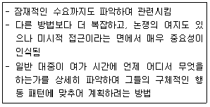
- 자원접근법
- 활동접근법
- 경제접근법
- 행태접근법
(정답률: 68%)
30. ｢환경영향평가법 시행령｣에서 규정한 “전략환경영향평가서”의 내용으로 틀린 것은?
- 대상사업이 실시되는 지역의 경관 및 방재가 포함되어야 한다.
- 전략환경영향평가 항목 등의 결정내용 및 조치 내용이 포함되어야 한다.
- 개발기본계획의 전략환경영향평가서 초안에 대한 주민, 관계 행정기관의 의견 및 이에 대한 반영 여부가 포함되어야 한다.
- 전략환경영향평가서에 포함되어야 하는 구체적인 내용과 작성방법 등에 관하여 필요한 세부사항은 관계 중앙행정기관의 장과 협의를 거쳐 환경부장관이 정하여 고시한다.
(정답률: 33%)
31. 조망(眺望, The vista)의 설계적 처리 방법이 아닌 것은?
- 부분적으로 나눌 수 있다.
- 경관특성과 조화되게 한다.
- 시각적 관심이 분할되지 않게 한다.
- 시작지점에서 한 눈에 전체가 보이게 한다.
(정답률: 46%)
32. ｢도시공원 및 녹지 등에 관한 법률 시행규칙｣에 의한 “녹지의 설치ㆍ관리 기준”으로 틀린 것은?
- 전용주거지역에 인접하여 설치ㆍ관리하는 녹지는 그 녹화면적률이 50퍼센트 이상이 되도록 할 것
- 재해발생시의 피난을 위해 설치ㆍ관리하는 녹지는 녹화면적률이 50퍼센트 이상이 되도록 할 것
- 원인시설에 대한 보안대책을 위해 설치ㆍ관리하는 녹지는 녹화면적률이 80퍼센트 이상이 되도록 할 것
- 완충녹지의 폭은 원인시설에 접한 부분부터 최소 10미터 이상이 되도록 할 것
(정답률: 49%)
33. ｢자연환경보전법｣에 의해 자연생태ㆍ자연경관을 특별히 보전할 필요가 있는 지역을 “생태ㆍ경관보전지역”으로 지정할 수 있다. 다음 중 이에 해당되지 않는 것은?
- 자연경관의 훼손이 심각하게 우려되는 지역
- 다양한 생태계를 대표할 수 있는 지역
- 지형 또는 지질이 특이하여 학술적 연구 또는 자연경관의 유지를 위하여 보전이 필요한 지역
- 자연 상태가 원시성을 유지하고 있거나 생물다양성이 풍부하여 보전 및 학술적 연구 가치가 큰 지역
(정답률: 60%)
34. 레크리에이션 계획 시 반영되는 표준치(standard)의 설명으로 옳지 않은 것은?
- 방법론적으로 우수하며, 확실성이 있다.
- 목표의 달성 정도를 평가하는데 도움이 된다.
- 계획이나 의사결정 과정에서 지침 또는 기준이 된다.
- 여가시설의 효과도(effectiveness)를 판단하는데 도움이 된다.
(정답률: 59%)
35. 우리나라 스키장 계획 관련 설명으로 가장 부적합한 것은?
- 남서향 사면에 계획
- 정상부는 급경사, 하부는 완경사로 계획
- 관련 시설을 포함하여 최소 10ha 이상의 면적이 바람직함
- 동계기간에 강설량이 많고, 적설기의 우천일수가 적은 곳
(정답률: 73%)
36. 골프장 코스 계획 시 잔디가 가장 잘 다듬어진 지역의 명칭은?
- 그린(green)
- 러프(rough)
- 페어웨이(fairway)
- 벙커(bunker)
(정답률: 68%)
37. 오픈스페이스를 형질, 기능, 소유의 기준으로 공공녹지, 자연녹지 및 공개녹지로 분류할 때 “공개녹지”에 해당하는 것은?
- 도로용지
- 개인정원
- 학교운동장
- 공익시설 부속원지
(정답률: 52%)
38. 각 각의 운동시설 계획 시 고려할 사항으로 옳은 것은?
- 농구코트의 장축 방위는 남-북 축을 기준으로 하고, 가까이에 건축물이 있는 경우에는 사이드라인을 건축물과 직각 혹은 평행하게 배치 계획한다.
- 배구장의 코트는 장축을 동-서로 설치하고, 주풍 방향에 수목을 설치하지 않고, 환기를 원활하게 계획한다.
- 야구장의 방위는 내ㆍ외야수의 플레이를 고려하여, 홈 플레이트를 서쪽과 남동쪽 사이에 자리 잡게 계획한다.
- 테니스 코트 장축의 방위는 정동-서를 기준으로 남서 5~15° 편차 내의 범위로 하며, 가능하면 콤트의 장축 방향과 주 풍향의 방향이 다르도록 계획한다.
(정답률: 59%)
39. 의자의 계획ㆍ설계기준으로 부적합한 것은?
- 등받이 각도는 수평면을 기준으로 95~110°를 기준으로 한다.
- 앉음판의 높이는 34~46cm를 기준으로 하되 어린이를 위한 의자는 낮게 할 수 있다.
- 앉음판의 폭은 38~45cm를 기준으로 한다.
- 의자의 길이는 1인당 최소 70cm를 기준으로 한다.
(정답률: 64%)
40. 자연지역에서 그 보호와 이용을 합리적으로 하는데 적정수용력의 개념이 사용된다. 이용자가 만족스럽게 공원경험(park experience)을 만끽하는 데는 일정지역에 어느 정도의 인원을 수용하는 것이 적정할 것인가를 기준으로 설정하는 적정 수용력은?
- 물리적 수용력
- 심리적 수용력
- 위락적 수용력
- 사회적 수용력
(정답률: 63%)
3과목: 조경설계
41. 시각적 환경의 질을 표현하는 특성과 거리가 먼 것은?
- 친근성(familiarity)
- 복잡성(complexity)
- 새로움(novelty)
- 의미성(meaning)
(정답률: 51%)
42. 먼셀의 색입체를 수평으로 잘랐을 때 나타나는 특징을 표현한 용어는?
- 등색상면
- 등명도면
- 등채도면
- 등대비면
(정답률: 45%)
43. 조경설계기준 상의 미끄럼대의 설계에 대한 설명이 옳지 않은 것은?
- 미끄럼판의 끝에서 계단까지는 최단거리로 움직일 수 있도록 한다.
- 미끄럼판(면)과 지면이 이루는 각(기울기)은 20~25°로 재질을 고려하여 설계한다.
- 착지판에서 놀이터 바닥의 답면까지 높이는 10cm 이하로 설계한다.
- 착지판의 길이는 50cm 이상으로 하고, 물이 고이지 않도록 수평면에서 바깥쪽으로 2~4°의 기울기를 이룰 수 있도록 설계한다.
(정답률: 50%)
44. Gordon Cullen이 도시경관 분석 시 이용했던 분석개념에 해당되지 않는 것은?
- 장소(Place)
- 내용(Content)
- 동일성(Identity)
- 연속적 경관(Serial Vision)
(정답률: 46%)
45. 시몬스(J.P.Simonds)가 말하는 외부공간을 형성하는 요소 중 평면적 요소(base plane)의 특징으로 적합하지 않은 것은?
- 모든 생명체의 근원을 이룬다.
- 대지 내의 토지이용 상황에 직접 관련된다.
- 우리 자신의 동선(動線)이 이 위에 존재한다.
- 수직적 요소보다 통제(control)가 용이하다.
(정답률: 62%)
46. 다음 제도용구 중 곡선을 그리는데 사용하기 가장 부적합한 도구는?
- 운형자
- 템플릿
- 자유곡선자
- 팬터그래프
(정답률: 60%)
47. 뱀이나, 무서운 개 따위는 상당한 거리를 두어도 기분이 나쁘다. 이러한 의식은 다음 항목에서 어느 공간 의식에 해당하는가?
- 시각적
- 촉각적
- 운동적
- 심리적
(정답률: 67%)
48. 다음 그림과 같은 재료 단면표시가 나타내는 것은?
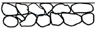
- 일반 흙
- 바위
- 잡석
- 호박돌
(정답률: 52%)
49. 다음 중 일반적으로 길이를 재거나 줄이는데 사용하는 축척이 아닌 것은?
- 1/100
- 1/700
- 1/200
- 1/300
(정답률: 69%)
50. 자연석 및 조경석을 활용한 설계 내용 중 틀린 것은?
- 하천에 있는 둥근 형태의 돌로서 지름 20cm 내외의 크기를 가지는 자연석을 호박돌이라 한다.
- 조형성이 강조되는 자연석을 사용할 때는 상세도면을 추가로 작성한다.
- 조경석 놓기는 조경석 높이의 1/3 이하가 지표선 아래로 묻히도록 설계한다.
- 디딤돌(징검돌) 놓기는 2연석, 3연석, 2ㆍ3연석, 3ㆍ4연석 놓기를 기본으로 설계한다.
(정답률: 47%)
51. 도면에서 2종류 이상의 선이 같은 곳에서 겹치게 될 때 표시하는 선의 우선순위가 옳게 나타난 것은?
- 외형선-절단선-중심선-숨은선
- 중심선-외형선-절단선-치수선
- 무게중심선-절단선-외형선-숨은선
- 외형선-숨은선-절단선-중심선
(정답률: 43%)
52. 평행주차형식의 경우 일반형 주차구획 규격의 기준은? (단, 규격은 너비×길이 순서임)
- 1.7미터 이상×4.5미터 이상
- 2.0미터 이상×3.6미터 이상
- 2.5미터 이상×5.0미터 이상
- 2.0미터 이상×6.0미터 이상
(정답률: 41%)
53. 시인성(color visibility)에 관한 설명이 틀린 것은?
- 색채마다 고유한 시인성이 있다.
- 다른 용어로 명시성(明視性)이라도로 한다.
- 검정보다 하양의 바탕이 시인성이 더 높다.
- 위험 등을 알리는 교통표지판이나 안내물 등에는 시인성을 이용하는 것이 좋다.
(정답률: 62%)
54. 경관요소가 시각에 대한 상대적 강도에 따라 경관의 표현이 달라지는 것을 우세요소(dominance elements)라 하는데, 다음 중 우세요소에 해당하는 것은?
- 대비, 시간, 연속, 축
- 선, 색체, 질감, 형태
- 대비, 리듬, 반복, 연속
- 리듬, 색체, 질감, 형태
(정답률: 60%)
55. 시각적 복잡성과 시각적 선호도와의 관계를 나타낸 설명 중 옳지 않은 것은?
- 일반적으로 중간 정도의 복잡성에 대한 시각적 선호도가 가장 높다.
- 복잡성이 아주 낮은 경우에 시각적 선호도가 낮아진다.
- 시각적 복잡성이 아주 높은 경우에 시각적 선호도가 가장 높다.
- 시장은 학교보다 훨씬 높은 정도의 복잡성이 요구된다.
(정답률: 65%)
56. 표지판 등 안내시설의 배치 시 고려할 사항으로 옳지 않은 것은?
- 종합안내표지판은 이용자가 가능한 한 적은 장소 등 인지도와 식별성이 낮은 지역에 배치한다.
- 표지판의 설치로 인하여 시선에 방해가 되어서는 아니 된다.
- CIP(Corpirate Identity Program) 개념을 도입하여 시설들이 통일성을 가질 수 있도록 한다.
- 보행동선이나 차량의 움직임을 고려한 배치계획으로 가독성과 시인성을 확보한다.
(정답률: 70%)
57. 다음 그림은 제3각법으로 제도한 것이다. 이 물체의 등각 투상도로 알맞은 것은?
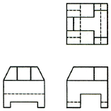
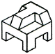
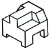
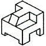
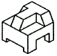
(정답률: 63%)
58. 도시공간의 분류방법 중 틸(thiel)에 의한 분류 방법이 아닌 것은?
- 모호한 공간(vagues)
- 한정된 공간(spaxes)
- 닫혀진 공간(volumes)
- 정적 공간(negative spaces)
(정답률: 55%)
59. 자전거도로에서 해당 자전거 설계속도가 시속 35km의 경우 최소 얼마 이상의 곡선반경(m)을 확보하여야 하는가? (단, 자전거 이용시설의 구조ㆍ시설 기준에 관한 규칙을 적용한다.)
- 12
- 17
- 27
- 35
(정답률: 42%)
60. A, B 두 점의 표고가 각각 318m, 345m이고, 수평거리가 280m인 등경사일 때 A점에서 330m 등고선이 지나는 점까지의 거리는?
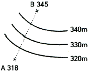
- 80m
- 100.5m
- 124.4m
- 145.2m
(정답률: 50%)
4과목: 조경식재
61. 일반적인 조경 수목의 형태 및 분류학적인 특징 연결로 가장 거리가 먼 것은?
- 침엽수-풍매화
- 나자식물-구과
- 쌍자엽식물-은화식물
- 현화식물-종자식물
(정답률: 34%)
62. “소사나무(Carpinus turczaninowii)”의 특징으로 틀린 것은?
- 한국이 원산지이다.
- 낙엽활엽 수목이다.
- 4~5월에 개화한다.
- 잎은 마주난다.
(정답률: 47%)
63. 생울타리용 수종들의 특성으로 옳은 것은?
- ｢juniperus chinensis 'Kaizuka'｣는 조해, 염해에 약하고 내한, 내서성이 있으며 건습에도 잘 자라나 이식은 어려운 편이다.
- ｢Ligustrum obtusifolium｣는 염해에 강하며 조해에도 비교적 강하고 토질은 가리지 않으며, 강한 전정에 잘 견딘다.
- ｢Euonymus japonicus｣는 이식이 쉽고 생장이 어느 수종보다도 빠르나 조해, 염해에는 약하다.
- ｢Chamaecyparis obtusa｣은 조해, 염새에 강하고 이식도 다른 수종에 비해 잘 되나 삽목에 의한 번식은 어렵다.
(정답률: 42%)
64. 생태적 천이(ecological succession)에 대한 설명으로 틀린 것은?
- 내적공생 정도는 성숙단계에 가까울수록 발달된다.
- 생활 사이클은 성숙단계에 가까울수록 길고 복잡하다.
- 생물과 환경과의 영양물 교환 속도는 성숙단계에 가까울수록 빨라진다.
- 영양물질의 보존은 성숙단계에 가까울수록 충분하게 된다.
(정답률: 46%)
65. 배경식재에 관한 설명으로 가장 거리가 먼 것은?
- 주경관의 배경을 구성하기 위한 식재
- 시각적으로 두드러지지 말아야 할 것
- 대상 수목은 암록색, 암회색 등의 수관 및 수피를 가질 것
- 대상 수목은 시선을 끄는 웅장한 수형을 가질 것
(정답률: 64%)
66. 방풍림(防風林, wind shelter) 조성 등에 관한 설명으로 틀린 것은?
- 식물은 공기의 이동을 방해하거나 유도하고 굴절시키며 여과시키는 기능을 한다.
- 수림의 밀폐도가 90%이상이 되면 풍하 쪽의 흡인 선풍과 난기류는 줄어든다.
- 수림대의 길이는 수고의 12배 이상이 필요하다.
- 주풍과 직각이 되는 방향으로 정삼각형 식재의 수림을 조성한다.
(정답률: 46%)
67. 수종별 특징이 옳지 않은 것은?
- 후박나무(Machilus thunbergii)는 상록성 수종이다.
- 백송(pinus bungeana)의 잎은 3엽 속생이다.
- 병꽃나무(weigela subessilis)는 경계식재용으로 많이 쓰인다.
- 상수리나무(Quercus acutissima)의 잎은 거치끝에 엽록소가 존재한다.
(정답률: 46%)
68. 시기적으로 꽃이 가장 먼저 피는 수목은?
- 풍년화(Hamamelis japonica)
- 무궁화(Hibiscus syriacus)
- 모란(Paeonia suffruticosa)
- 나무수국(Hydrangea paniculata)
(정답률: 48%)
69. 시야를 방해하지 않으면서 공간을 분할 및 한정하는데 이용할 수 있는 수종으로만 구성된 것은?
- 백합나무, 맥문동
- 회화나무, 가죽나무
- 느티나무, 수수꽃다리
- 화살나무, 병아리꽃나무
(정답률: 57%)
70. 계절의 변화를 가장 확실하게 보여 주는 수종은?
- 주목(Taxus cuspidata)
- 동백나무(Camellia japonica)
- 산벚나무(Prunus sargentii)
- 태산목(Magnolia grandiflora)
(정답률: 61%)
71. 자연풍경식 식재 양식에 속하지 않는 것은?
- 배경식재
- 부등변 삼각형식재
- 임의식재
- 표본식재
(정답률: 55%)
72. 서울 등의 도심지역에 가로수를 식재할 때 고려해야 할 사항으로 가장 거리가 먼 것은?
- 지하고(枝下高)를 고려한다.
- 수고(樹高)를 고려한다.
- 심근성(深根性)여부를 고려한다.
- 내염성(耐鹽性)을 고려한다.
(정답률: 62%)
73. 정원공간의 안쪽을 멀고, 깊게 보이게 하는 방법으로서 적합하지 않은 것은?
- 뒤쪽에 황록색(GY), 앞쪽에 청자색(PB)의 식물을 심는다.
- 뒤쪽에 후퇴색, 앞쪽에 진출색의 식물을 심는다.
- 뒤쪽에 질감(Texture)이 부드러운 수목을 앞쪽에 질감이 거친 것을 심는다.
- 뒤쪽에 키가 작은 나무를, 앞쪽에 키가 큰 나무를 심는다.
(정답률: 46%)
74. 화서(花序, inflorescence) 종류 중 “무한화서(총상화서)”에 해당하는 것은?
- 수수꽃다리(Syringa oblata)
- 때죽나무(Styrax japonicus)
- 목련(Magnolia kobus)
- 작살나무(Callicarpa japonica)
(정답률: 36%)
75. 생물종 다양성에 관한 설명으로 옳은 것은?
- 생물종 다양성의 이론은 열대지방에서만 적용되는 것이므로 온대지방에서는 문제가 없음
- 일반적으로 생태적 천이단계에서 극상림은 생물종 다양성이 발전단계보다 낮아짐
- 도시지역에서는 인위적으로 생물종 다양성을 높일 수 없음
- 엔트로피가 증가되면 생물종 다양상은 반드시 증가함
(정답률: 50%)
76. 두 그루의 수목을 근접 위치에 식재하면, 관련(關聯) 및 대립(對立)으로서의 구성을 보인다. 다음 중 “관련의 구성”에 해당되지 않은 것은?
- 두 그루가 한시야(약 60°각도)에 들어오게 배식한다.
- 수고보다 수관폭이 큰 경우, 두 그루의 거리를 두 수관폭의 1/2씩의 합계보다 좁게 유지한다.
- 두 그루의 수고 합계보다 식재거리를 좁게 배식한다.
- 두 그루의 거리가 두 그루의 수관폭 합계보다 좁게 유지한다.
(정답률: 38%)
77. 다음 설명에 적합한 한국의 수평적 삼림대는?
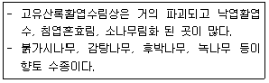
- 한대림
- 온대북부
- 온대남부
- 난대림
(정답률: 37%)
78. 방음식재의 효과를 높이기 위한 유의사항으로 가장 거리가 먼 것은?
- 소음원에 접근해서 식재하는 것이 효과가 높다.
- 경관을 고려하여 지하고가 높은 교목을 선정하고, 식재대는 10m 이하가 적합하다.
- 수종은 가급적 지하고가 낮은 상록교목을 사용하는 것이 감쇠효과가 높다.
- 자동차도로 소음 감쇠용 방음식재의 수림대는 높이가 13.5m 이상이 되도록 한다.
(정답률: 50%)
79. 다음 설명하는 종자 활력검정방법은?
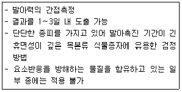
- 발아검정
- X-ray 검사
- 배 추출검정(EE검정)
- 테트라졸리움 검정(TTC검정)
(정답률: 46%)
80. 산림생태계 복원 시 자생종으로 활용할 수 있는 수종으로만 조합된 것은?
- 가죽나무(Ailanthus altissima), 자귀나무(Albizia julibrissin)
- 감나무(Diospyros kaki), 버즘나무(platanus orientalis)
- 모과나무(Chaenomeles sinensis), 메타세콰이아(Metasequoia glyptostroboides)
- 상수리나무(Quercus acutissima), 때죽나무(Styrax japonicus)
(정답률: 48%)
5과목: 조경시공구조학
81. 다음은 콘크리트 구조물의 동해에 의한 피해현상을 나타낸 것이다. 어느 현상을 설명한 것인가?
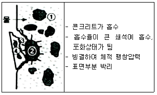
- Pop Out
- 폭렬 현상
- Laitance
- 알칼리 골재반응
(정답률: 54%)
82. 다음 설명하는 배수 계통의 종류는?
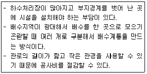
- 직각식(直角式)
- 차집식(遮潗式)
- 선형식(扇形式)
- 방사식(放射式)
(정답률: 62%)
83. 축척 1:1500 지도상의 면적을 잘못하여 축척 1:1000으로 측정하였더니 10000m2 나왔다면 실제의 면적은?
- 15,000m2
- 18,700m2
- 22,500m2
- 24,300m2
(정답률: 49%)
84. 회전입상 살수기(回傳立上撒水器, rotary pop-up head)의 설명으로 옳은 것은?
- 고정된 동체와 분사공만으로 된 살수기
- 특수한 경우에 사용되는 분류 살수기
- 회전하며 한 개 또는 여러 개의 분무공을 갖는 살수기
- 동체로부터 분무공이 올라와서 회전하는 살수기
(정답률: 53%)
85. 합성수지 중 건축물의 천장재, 블라인드 등을 만드는 열가소성수지는?
- 요소수지
- 실리콘수지
- 알키드수지
- 폴리스티렌수지
(정답률: 55%)
86. 공사내역서 작성 시 순공사 원가가 해당되는 항목이 아닌 것은?
- 경비
- 노무비
- 재료비
- 일반관리비
(정답률: 56%)
87. 시방서 작성에 포함되는 내용이 아닌 것은?
- 시공에 대한 주의사항
- 재료의 수량 및 가격
- 시공에 필요한 각종 설비
- 재료 및 시공에 관한 검사
(정답률: 50%)
88. 평판 측량에서 평판을 세울 때 발생하는 오차 중 다른 오차에 비하여 그 영향이 매우 큰 오차는?
- 거리 오차
- 기울기 오차
- 방향 맞추기 오차
- 중심 맞추기 오차
(정답률: 44%)
89. 지오이드(Geoid)에 관한 성명으로 틀린 것은?
- 하나의 물리적 가상면이다.
- 평균 해수면과 일치하는 등포텐셜면이다.
- 지오이드면과 기준 타원체면과는 일치한다.
- 지오이드 상의 어느 점에서나 중력 방향에 연직이다.
(정답률: 54%)
90. 다음 그림과 같이 벽돌을 활용한 내력벽 쌓기의 명칭은?
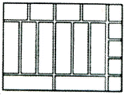
- 길이 쌓기
- 옆세워 쌓기
- 마구리 쌓기
- 길이세워 쌓기
(정답률: 49%)
91. 다음 중 표준품셈의 재료별 할증률이 가장 큰 것은?
- 이형철근
- 붉은벽돌
- 조경용수목
- 마름돌용 원석
(정답률: 45%)
92. 강우유역 면적이 28ha이고, 평균 우수유출계수가 C=0.15인 도시공원에 강우강도가 I=15mm/hr일 때 공원의 우수 유출량(m3/sec)은?
- 0.175
- 0.635
- 1.035
- 3.015
(정답률: 49%)
93. 0.7m3 용량의 유압식 백호우를 이용하여 작업상태가 양호한 자연상태의 사질토를 굴착 후 선회각도 90°로 덤프트럭에 적재하려 할 때 시간당 굴착작업량은? (단, 버킷계수는 1.1, L은 1.25, 1회 사이클 시간은 16초, 토질별 작업효율은 0.85이다.)
- 1.79m3
- 3.07m3
- 117.81m3
- 184.08m3
(정답률: 47%)
94. □단면 90×90mm의 미송목재 단주(短柱)에 3톤의 고정하중이 축방향 압축력으로 작용한다면 압축 응력은?
- 32 kgf/cm2
- 37 kgf/cm2
- 42 kgf/cm2
- 47 kgf/cm2
(정답률: 41%)
95. 다음과 같이 평탄지를 조성하는 방법은 어떤 수법에 의한 것인가?
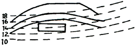
- 성토에 의한 방법
- 절토에 의한 방법
- 옹벽에 의한 방법
- 혼합(절토와 성토) 방법
(정답률: 49%)
96. 네트워크 공정표 작성에 대한 설명으로 옳지 않은 것은?
- ○표는 결합점(Event, node)이라 한다.
- 작업(activity)은 화살표로 표시하고 화살표에는 시종으로 동그라미를 표시한다.
- 동일 네트워크에 있어서 동일 번호가 2개 이상 있어서는 아니 된다.
- 화살표의 윗부분에 소요시간을 밑 부분에 작업명을 표기한다.
(정답률: 58%)
97. 흙의 함수율, 함수비, 공극률, 공극비에 대한 설명으로 틀린 것은?
- 함수율은 공극수 중량과 흙 전체 중량의 백분율이다.
- 공극률은 흙 전체 용적에 대한 공극의 체적 백분율이다.
- 공극비는 고체부분의 체적에 대한 공극의 체적비이다.
- 함수비는 토양에 존재하는 수분의 무게를 흙의 체적으로 나눈 백분율이다.
(정답률: 44%)
98. 광원에 의해 빛은 받는 장소의 밝기를 뜻하는 조도의 단위는?
- 룩스(lx)
- 암페어(A)
- 칸델라(cd)
- 스틸브(sd)
(정답률: 63%)
99. 구조물에 작용하는 하중의 유형과 그에 대한 설명이 옳지 않은 것은?
- 고정하중 : 구조물과 같이 항상 일정한 위치에서 작용하는 하중이며, 구조체나 벽 등의 체적에 재료의 단위용적 중량을 곱하여 구한다.
- 집중하중 : 하중이 구조물에 얹혀있는 면적이 아주 좁아 한 점으로 생각되는 경우의 하중이다.
- 눈하중 : 구조물에 쌓이는 눈의 중량을 말하며, 지붕의 경사각이 30°를 넘는 경우 눈하중을 경감할 수 있다.
- 풍하중 : 구조물에 재난을 주는 빈도가 높은 하중이며, 특히 내륙지방에서는 20%를 증가시켜 적용한다.
(정답률: 51%)
100. 물의 흐름과 관련한 설명 중 등류(等流)에 해당하는 것은?
- 유속과 유적이 변하지 않는 흐름
- 물 분자가 흩어지지 않고 질서정연하게 흐르는 흐름
- 한 단면에서 유적과 유속이 시간에 따라 변하는 흐름
- 일정한 단면을 지나는 유량이 시간에 따라 변하지 않는 흐름
(정답률: 37%)
6과목: 조경관리론
101. 농약 중 분제(粉劑)에 대한 설명으로 옳은 것은?
- 분제에 대한 검사 항목으로는 주성분과 분말도이다.
- 분제는 유제에 비하여 수목에 고착성이 우수하다.
- 분제의 물리성 중에서 중요한 것은 입자의 크기와 현수성이다.
- 주제에 Kaoline 등의 점토광물과 계면활성제 및 분산제를 넣어 제제화한 것이다.
(정답률: 34%)
102. 다음 중 식물체내의 질소고정작용에 가장 필요한 원소는?
- Mo
- Si
- Mn
- Zn
(정답률: 39%)
103. 부식이 토양의 pH 완충력을 증가시킬 수 있는 이유로 가장 적절한 것은?
- carboxyl기를 많이 가지고 있으므로
- 석회를 많이 흡착 보유할 수 있으므로
- 미생물의 활성을 증가시키므로
- 질산화 작용을 억제하므로
(정답률: 39%)
104. 멀칭(mulching)의 효과가 아닌 것은?
- 토양수분이 유지된다.
- 토양의 비옥도를 증진시킨다.
- 염분농도를 증진시킨다.
- 점토질 토양의 경우 갈라짐을 방지한다.
(정답률: 64%)
1⑤. 수림지의 하예작업 관리계획 수립시의 검토사항으로 가장 거리가 먼 것은?
- 계속 연수
- 연간 횟수
- 작업시기
- 현존량
(정답률: 48%)
106. 농약의 살포방법 중 유제, 수화제, 수용제 등에서 조제한 살포액을 분무기를 사용하여 무기분무(airless spray)에 의하여 안개모양으로 살포하는 방법은?
- 분무법
- 미스트법
- 폼스프레이법
- 스프링클러법
(정답률: 44%)
107. 레크레이션 시설의 서비스 관리를 위해서는 제한 인자들에 대한 이해가 필요하며 그것들을 극복할 수 있어야만 한다. 다음 중 그 제한인자에 속하지 않는 것은?
- 관련법규
- 특별 서비스
- 이용자 태도
- 관리자의 목표
(정답률: 45%)
108. 각종 운동경기장, 골프장의 Green, Tee 및 Fairway 등과 같이 집중적인 재배를 요하는 잔디 초지는 답압의 내구력과 피해로부터 빨리 회복되는 능력 등이 매우 중요하다. 다음 중 잔디 초지류의 내구성에 대한 저항력이 가장 강한 것은?
- Perennial ryegrass
- Creeping bentgrass
- Kentucky bluegrass
- Tall fescue
(정답률: 39%)
109. 토사로 포장한 원로의 보수 관리 설명으로 틀린 것은?
- 먼지 발생을 억제하기 위해 물을 뿌리거나 염화칼슘을 살포한다.
- 측구나 암거 등 배수시설을 정비하고 제초를 한다.
- 요철부는 같은 비율로 배합된 재료로 채우고 다진다.
- 표면배수를 위하여 노면횡단경사를 8~10% 이상으로 유지한다.
(정답률: 51%)
110. 토양 전염을 하지 않는 것은?
- 뿌리혹병
- 모잘록병
- 오동나무 탄저병
- 자주빛날개무늬병
(정답률: 46%)
111. 하천 생태복원관리의 설명으로 틀린 것은?
- 조성된 생태하천을 효율적으로 관리하기 위해서는 생태적 천이에 교란을 주지 않는 범위 내에서 최소한의 관리를 해주어야 한다.
- 생태하천에서의 비점오염원의 유입차단 및 수질정화효과를 극대화시키기 위해서는 초본의 경우 연 1회(늦가을) 제초를 해주어야 하며 제거된 초본은 하천부지 밖으로 유출하여야 한다.
- 다년생 초본류와 같은 식생대를 유지하기 위해서는 환삼덩굴과 같은 덩굴성식물이나 단풍잎돼지풀과 같은 외래식물은 지속적으로 구제해주어야 한다.
- 하천 내에서는 생태하천조성 당시의 원하지 않았던 식물이 도입될 경우, 식물을 조기에 제거하기 위하여 제초제를 사용한다.
(정답률: 49%)
112. 아스팔트 콘크리트 도로 포장의 균열 파손을 보수하는 방법으로 사용할 수 없는 것은?
- 표면처리 공법
- 덧씌우기 공법
- 모르타르 주입공법
- 패칭공법
(정답률: 48%)
113. 소나무좀은 유충과 성충이 모두 소나무에 피해를 가하는데, 신성충이 주로 가해하는 곳은?
- 소나무 잎
- 소나무 뿌리
- 수간 밑부분
- 소나무 새가지
(정답률: 47%)
114. 다음 중 근로재해의 도수율(度數率)을 가장 잘 설명한 것은?
- 근로자 1000명당 1년간에 발생하는 사상자 수
- 재적근로자 1000명당 년간 근로 재해 수
- 재적근로자의 근로 시간당의 사상자 수
- 연 근로시간 합계 100만 시간당의 재해 발생 건수
(정답률: 35%)
115. 조경공간에서 잡초가 발아하여 지표면 위로 출현하는 과정에 관여하는 요인과 가장 관련이 적은 것은?
- 토양심도
- 토양강도
- 토양수분
- 토양온도
(정답률: 41%)
116. 시공자를 대신하여 공사의 모든 시공관리, 공사업무 및 안전관리업무를 행사하는 사람은?
- 감독관
- 작업반장
- 현장대리인
- 공사감리자
(정답률: 48%)
117. 다음 설명의 ()안에 들어갈 용어는?
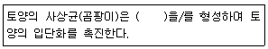
- 균사
- 포자
- 항생물질
- 뿌리혹박테리아
(정답률: 50%)
118. 다음 종 조경관리를 위한 동력예취기, 농약살포 연무기, 사다리 등의 장비관리 내용이 틀린 것은?
- 연무기 몸체는 열기를 식힐 수 있도록 주기적으로 물을 뿌려 적셔주도록 한다.
- 가급적 예취기의 날은 작업에 맞도록 사용하며, 일자날 사용은 하지 않도록 한다.
- 사다리 작업시 손, 발, 무릎 등 신체의 일부를 사용하여 3점을 사다리에 접촉ㆍ유지한다.
- 예취작업은 오른쪽에서 왼쪽 방향으로 하며, 운전 중 항상 기계의 작업범위내에 사람이 접근하지 못하도록 한다.
(정답률: 53%)
119. 미국흰불나방의 생태적 특성을 설명한 것으로 틀린 것은?
- 주로 활엽수를 가해한다.
- 성충은 1년에 1회만 발생한다.
- 수피사이, 판자 틈, 나무의 빈 공간에 형성한 고치를 수시로 채집하여 소각 한다.
- 8월 상순부터 유충이 부화하여 10월 상순까지 가해한 후 번데기가 되어 월동에 들어간다.
(정답률: 54%)
120. 수목생장에 영향을 끼지는 저해 요인들 중 상대적 비율이 가장 높은 것은?
- 충해
- 병해
- 기상피해
- 산불피해
(정답률: 43%)